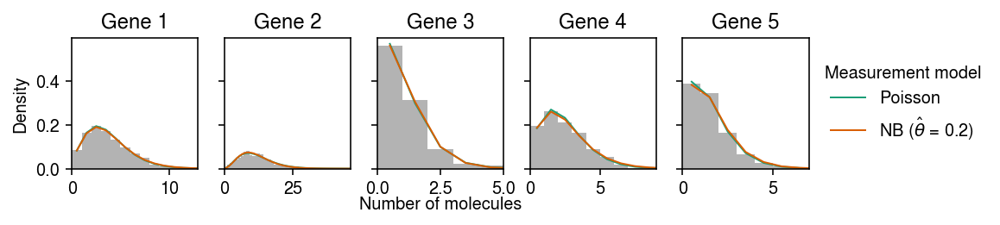
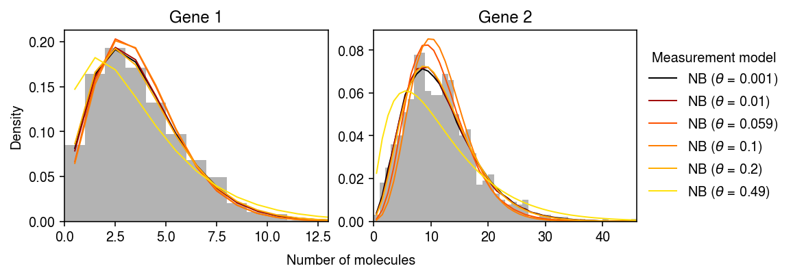

Negative binomial measurement model
Table of Contents
Introduction
We, and Svensson 2020, found some evidence for overdispersion in control scRNA-seq data. Here, we estimate to what extent that overdispersion could be explained by an overdispersed measurement model, using the key fact that the measurement overdispersion is described by a single parameter common across all genes. We specifically consider combining an NB measurement model with a Gamma expression model \( \DeclareMathOperator\Pois{Poisson} \DeclareMathOperator\Gam{Gamma} \DeclareMathOperator\NB{NB} \newcommand\const{\mathrm{const}} \newcommand\lnb{l_{\mathrm{NB}}} \newcommand\E[1]{\left\langle #1 \right\rangle} \)
\begin{align} x_{ij} \mid s_i, \lambda_{ij}, u_{ij} &\sim \NB(s_i \lambda_{ij}, \theta)\\ \lambda_{ij} \mid a_j, b_j &\sim \Gam(a_j, b_j), \end{align}where the NB distribution is parameterized by mean and dispersion.
Setup
import numpy as np import pandas as pd import scipy.special as sp import scipy.stats as st import scmodes
%matplotlib inline %config InlineBackend.figure_formats = set(['retina'])
import matplotlib.pyplot as plt plt.rcParams['figure.facecolor'] = 'w' plt.rcParams['font.family'] = 'Nimbus Sans'
Results
VBEM algorithm for Gamma expression model
To estimate \(a_1, \ldots, a_p, b_1, \ldots, b_p, \theta\) from observed data, we use a VBEM algorithm. First, introduce latent variables \(u_{ij}\)
\begin{align} x_{ij} \mid s_i, \lambda_{ij}, u_{ij} &\sim \Pois(s_i \lambda_{ij} u_{ij})\\ u_{ij} \mid \theta &\sim \Gam(\theta^{-1}, \theta^{-1})\\ \lambda_{ij} \mid a_j, b_j &\sim \Gam(a_j, b_j), \end{align}where the Gamma distribution is parameterized by shape and rate. It is straightforward to show that marginalizing over \(u_{ij}\) yields the original NB-Gamma compound model of interest. The log joint
\begin{multline} \ln p(x_{ij} \mid \lambda_{ij}, u_{ij}, a_j, b_j, \theta) = x_{ij} \ln (s_i \lambda_{ij} u_{ij}) - s_i \lambda_{ij} u_{ij} - \ln\Gamma(x_{ij} + 1)\\ + (a_j - 1) \ln \lambda_{ij} - b_j \lambda_{ij} + a_j \ln b_j - \ln\Gamma(a_j) + (\theta^{-1} - 1) \ln u_{ij} - \theta^{-1} u_{ij} + \theta^{-1}\ln\theta^{-1} - \ln\Gamma(\theta^{-1}), \end{multline}and the posteriors
\begin{align} \ln p(\lambda_{ij} \mid x_{ij}, u_{ij}, a_j, b_j) &= (x_{ij} + a_j - 1) \ln \lambda_{ij} - (s_i u_{ij} + b_j) \lambda_{ij} + \const\\ &= \Gam(x_{ij} + a_j, s_i u_{ij} + b_j)\\ \ln p(u_{ij} \mid x_{ij}, \lambda_{ij}, a_j, b_j) &= (x_{ij} + \theta^{-1} - 1) \ln \lambda_{ij} - (s_i \lambda_{ij} + b_j) u_{ij} + \const\\ &= \Gam(x_{ij} + \theta^{-1}, s_i \lambda_{ij} + b_j). \end{align}However, the required expectations for an EM algorithm that directly maximizes the likelihood are non-analytic. To side-step this problem, introduce a variational approximation
\begin{align} q &= \prod_{i,j} q(\lambda_{ij}) q(u_{ij})\\ q^*(\lambda_{ij}) &\propto \exp((x_{ij} + a_j - 1) \ln \lambda_{ij} - (s_i \E{u_{ij}} + b_j) \lambda_{ij})\\ &= \Gam(x_{ij} + a_j, s_i \E{u_{ij}} + b_j)\\ &\triangleq \Gam(\alpha_{ij}, \beta_{ij})\\ q^*(u_{ij}) &\propto \exp((x_{ij} + \theta^{-1} - 1) \ln u_{ij} - (s_i \E{\lambda_{ij}} + b_j) u_{ij})\\ &= \Gam(x_{ij} + \theta^{-1}, s_i \E{\lambda_{ij}} + \theta^{-1})\\ &\triangleq \Gam(\gamma_{ij}, \delta_{ij}). \end{align}The evidence lower bound
\begin{multline} \ell = \sum_{i, j} \left[ (x_{ij} + a_j - \alpha_{ij}) \E{\ln \lambda_{ij}} - (b_j - \beta_{ij}) \E{\lambda_{ij}} + (x_{ij} + \theta^{-1} - \gamma_{ij}) \E{\ln u_{ij}} - (\theta^{-1} - \delta_{ij}) \E{u_{ij}} - s_i \E{\lambda_{ij}} \E{u_{ij}}\right.\\ + \left. a_j \ln b_j + \theta^{-1}\ln\theta^{-1} - \alpha_{ij} \ln \beta_{ij} - \gamma_{ij} \ln \delta_{ij} - \ln\Gamma(a_j) - \ln\Gamma(\theta^{-1}) + \ln\Gamma(\alpha_{ij}) + \ln\Gamma(\gamma_{ij})\right] + \const, \end{multline}where
\begin{align} \E{\lambda_{ij}} &= \alpha_{ij} / \beta_{ij}\\ \E{\ln\lambda_{ij}} &= \psi(\alpha_{ij}) - \ln(\beta_{ij})\\ \E{u_{ij}} &= \gamma_{ij} / \delta_{ij}\\ \E{\ln u_{ij}} &= \psi(\gamma_{ij}) - \ln(\delta_{ij}), \end{align}and \(\psi\) denotes the digamma function. Then, we have analytic M step update
\begin{align} \frac{\partial \ell}{\partial b_j} &= \sum_{i} \frac{a_j}{b_j} - \E{\lambda_{ij}} = 0\\ b_j &:= \frac{n a_j}{\sum_i \E{\lambda_{ij}}} \end{align}and Newton-Raphson partial M step updates
\begin{align} \eta &\triangleq \theta^{-1}\\ \frac{\partial \ell}{\partial \eta} &= \sum_{i, j} 1 + \E{\ln u_{ij}} - \E{u_{ij}} - \psi(\eta)\\ \frac{\partial^2 \ell}{\partial \eta^2} &= -n p \psi^{(1)}(\eta)\\ \frac{\partial \ell}{\partial a_j} &= \sum_i \E{\ln\lambda_{ij}} + \ln b_j - \psi(a_j)\\ \frac{\partial^2 \ell}{\partial a_j^2} &= -n \psi^{(1)}(a_j), \end{align}where \(\psi^{(1)}\) denotes the trigamma function.
Simulation
Implement a simplified DSC.
def simulate_nb_gamma(n, p, theta, seed=0): np.random.seed(seed) log_mean = np.random.uniform(low=-12, high=-8, size=(1, p)) log_disp = np.random.uniform(low=-6, high=0, size=(1, p)) s = 1e5 * np.ones((n, 1)) lam = st.gamma(a=np.exp(-log_disp), scale=np.exp(log_mean + log_disp)).rvs(size=(n, p)) u = st.gamma(a=1 / theta, scale=theta).rvs(size=(n, p)) x = st.poisson(s * lam * u).rvs() return x, s, lam, u, log_mean, -log_disp, theta def evaluate_ebnbm_gamma(n, p, n_trials=1): res = dict() for log_theta in (-2,): for i in range(n_trials): x, s, _, _, log_mean, log_inv_disp, _ = simulate_nb_gamma(n, p, theta=np.exp(log_theta), seed=i) log_mean_hat, log_inv_disp_hat, log_inv_meas_disp_hat, *_ = scmodes.ebnbm.ebnbm_gamma(x, s, extrapolate=False) res[(log_theta, i)] = pd.DataFrame({'log_mean': log_mean.ravel(), 'log_inv_disp': log_inv_disp.ravel(), 'log_mean_hat': log_mean_hat.ravel(), 'log_inv_disp_hat': log_inv_disp_hat.ravel()}) # res[(log_theta, i)]['log_inv_meas_disp_hat'] = log_inv_meas_disp_hat res = (pd.concat(res) .reset_index() .rename({'level_0': 'log_theta', 'level_1': 'trial', 'level_2': 'gene'}, axis=1)) return res
Simulate an example. Fit the model, first fixing the hyperparameters to the ground truth values.
x, s, lam, u, log_mean, log_inv_disp, theta = simulate_nb_gamma(n=1000, p=5, theta=0.2, seed=1) log_mean_hat, log_inv_disp_hat, log_meas_disp_hat, alpha, beta, gamma, delta, elbo = scmodes.ebnbm.ebnbm_gamma( x, s, init=np.hstack([np.exp(log_inv_disp).ravel(), np.exp(-log_mean + log_inv_disp).ravel(), theta]), tol=1e-5, extrapolate=False, verbose=True, fix_theta=True) y = np.arange(x[:,0].max() + 1) # Poisson measurement => NB observation pmf = dict() pmf['Poisson'] = st.nbinom(n=np.exp(log_inv_disp[:,0]), p=1 / (1 + (s * np.exp(log_mean[:,0] - log_inv_disp[:,0])))).pmf(y).mean(axis=0) # NB measurement => Monte Carlo integral n_samples = 1000 G = st.gamma(a=np.exp(log_inv_disp[:,0]), scale=np.exp(log_mean[:,0] - log_inv_disp[:,0])) temp = G.rvs(size=(n_samples, y.shape[0], 1)) pmf[rf'NB ($\theta$ = {theta:.2g})'] = st.nbinom(n=1 / theta, p=1 / (1 + s[0] * temp * theta)).pmf(y.reshape(-1, 1)).mean(axis=0) Ghat = st.gamma(a=np.exp(log_inv_disp_hat[:,0]), scale=np.exp(log_mean_hat[:,0] - log_inv_disp_hat[:,0])) temp = Ghat.rvs(size=(n_samples, y.shape[0], 1)) pmf[rf'NB ($\hat\theta$ = {np.exp(log_meas_disp_hat):.2g})'] = st.nbinom(n=np.exp(-log_meas_disp_hat), p=1 / (1 + s[0] * temp * np.exp(log_meas_disp_hat))).pmf(y.reshape(-1, 1)).mean(axis=0) cdf = dict() grid = np.linspace(0, (x / s).max(), 1000) cdf['Estimated'] = Ghat.cdf(grid).ravel() cdf['Ground truth'] = G.cdf(grid).ravel()
Make sure we didn’t mess up the parameterization.
cm = plt.get_cmap('Dark2') plt.clf() fig, ax = plt.subplots(2, 1) fig.set_size_inches(4.5, 4) ax[0].hist(x[:,0], bins=y, color='0.7', density=True) for i, k in enumerate(pmf): ax[0].plot(y + .5, pmf[k], c=cm(i), lw=1, label=k) ax[0].legend(title='Measurement model', frameon=False) ax[0].set_xlim(0, x[:,0].max()) ax[0].set_xlabel('Number of molecules') ax[0].set_ylabel('Density') cm = plt.get_cmap('Paired') for i, k in enumerate(cdf): ax[1].plot(grid, cdf[k], c=cm(i), lw=1, label=k) ax[1].legend(title='Expression model', frameon=False) ax[1].set_xlim(0, 1.5e-4) ax[1].set_xticks([0, 5e-5, 1e-4, 1.5e-4]) ax[1].set_xlabel('True gene expression level') ax[1].set_ylabel('CDF') fig.tight_layout()

Compare the true posterior against the variational approximation.
plt.clf() fig, ax = plt.subplots(1, 2) fig.set_size_inches(5, 2.5) for a in ax: a.set_aspect('equal', adjustable='datalim') ax[0].set_xscale('log') ax[0].set_yscale('log') ax[0].scatter(((x + np.exp(log_inv_disp)) / (s * u + np.exp(log_inv_disp - log_mean))).ravel(), (alpha / beta).ravel(), s=1, c='k', alpha=0.1) ax[0].set_xlabel(r'$\mathrm{E}[\lambda \mid x, u]$') ax[0].set_ylabel(r'$\mathrm{E}_q[\lambda]$') ax[1].scatter(((x + theta) / (s * lam + theta)), (gamma / delta).ravel(), s=1, c='k', alpha=0.1) ax[1].set_xlabel(r'$\mathrm{E}[u \mid x, \mu]$') ax[1].set_ylabel(r'$\mathrm{E}_q[u]$') fig.tight_layout()

Now, fit the model initialized at the ground truth.
log_mean_hat, log_inv_disp_hat, log_meas_disp_hat, alpha, beta, gamma, delta, elbo = scmodes.ebnbm.ebnbm_gamma( x, s, init=np.hstack([np.exp(log_inv_disp).ravel(), np.exp(-log_mean + log_inv_disp).ravel(), theta]), tol=1e-3, max_iters=20000, extrapolate=False, verbose=True, fix_theta=False) y = np.arange(x[:,0].max() + 1) # Poisson measurement => NB observation pmf = dict() pmf['Poisson'] = st.nbinom(n=np.exp(log_inv_disp[:,0]), p=1 / (1 + (s * np.exp(log_mean[:,0] - log_inv_disp[:,0])))).pmf(y).mean(axis=0) # NB measurement => Monte Carlo integral n_samples = 1000 G = st.gamma(a=np.exp(log_inv_disp[:,0]), scale=np.exp(log_mean[:,0] - log_inv_disp[:,0])) temp = G.rvs(size=(n_samples, y.shape[0], 1)) pmf[rf'NB ($\theta$ = {theta:.2g})'] = st.nbinom(n=1 / theta, p=1 / (1 + s[0] * temp * theta)).pmf(y.reshape(-1, 1)).mean(axis=0) Ghat = st.gamma(a=np.exp(log_inv_disp_hat[:,0]), scale=np.exp(log_mean_hat[:,0] - log_inv_disp_hat[:,0])) temp = Ghat.rvs(size=(n_samples, y.shape[0], 1)) pmf[rf'NB ($\hat\theta$ = {np.exp(log_meas_disp_hat):.2g})'] = st.nbinom(n=np.exp(-log_meas_disp_hat), p=1 / (1 + s[0] * temp * np.exp(log_meas_disp_hat))).pmf(y.reshape(-1, 1)).mean(axis=0) cdf = dict() grid = np.linspace(0, (x / s).max(), 1000) cdf['Estimated'] = Ghat.cdf(grid).ravel() cdf['Ground truth'] = G.cdf(grid).ravel()
Plot the fitted models against the observed data.
cm = plt.get_cmap('Dark2') plt.clf() fig, ax = plt.subplots(2, 1) fig.set_size_inches(4.5, 4) ax[0].hist(x[:,0], bins=y, color='0.7', density=True) for i, k in enumerate(pmf): ax[0].plot(y + .5, pmf[k], c=cm(i), lw=1, label=k) ax[0].legend(title='Measurement model', frameon=False) ax[0].set_xlim(0, x[:,0].max()) ax[0].set_xlabel('Number of molecules') ax[0].set_ylabel('Density') cm = plt.get_cmap('Paired') for i, k in enumerate(cdf): ax[1].plot(grid, cdf[k], c=cm(i), lw=1, label=k) ax[1].legend(title='Expression model', frameon=False) ax[1].set_xlim(0, 1.5e-4) ax[1].set_xticks([0, 5e-5, 1e-4, 1.5e-4]) ax[1].set_xlabel('True gene expression level') ax[1].set_ylabel('CDF') fig.tight_layout()

y = np.arange(x[:,1].max() + 1) # Poisson measurement => NB observation pmf = dict() pmf['Poisson'] = st.nbinom(n=np.exp(log_inv_disp[:,1]), p=1 / (1 + (s * np.exp(log_mean[:,1] - log_inv_disp[:,1])))).pmf(y).mean(axis=0) # NB measurement => Monte Carlo integral n_samples = 1000 G = st.gamma(a=np.exp(log_inv_disp[:,1]), scale=np.exp(log_mean[:,1] - log_inv_disp[:,1])) temp = G.rvs(size=(n_samples, y.shape[0], 1)) pmf[rf'NB ($\theta$ = {theta:.2g})'] = st.nbinom(n=1 / theta, p=1 / (1 + s[0] * temp * theta)).pmf(y.reshape(-1, 1)).mean(axis=0) Ghat = st.gamma(a=np.exp(log_inv_disp_hat[:,1]), scale=np.exp(log_mean_hat[:,1] - log_inv_disp_hat[:,1])) temp = Ghat.rvs(size=(n_samples, y.shape[0], 1)) pmf[rf'NB ($\hat\theta$ = {np.exp(log_meas_disp_hat):.2g})'] = st.nbinom(n=np.exp(-log_meas_disp_hat), p=1 / (1 + s[0] * temp * np.exp(log_meas_disp_hat))).pmf(y.reshape(-1, 1)).mean(axis=0) cdf = dict() grid = np.linspace(0, (x / s).max(), 1000) cdf['Estimated'] = Ghat.cdf(grid).ravel() cdf['Ground truth'] = G.cdf(grid).ravel() cm = plt.get_cmap('Dark2') plt.clf() fig, ax = plt.subplots(2, 1) fig.set_size_inches(4.5, 4) ax[0].hist(x[:,1], bins=y, color='0.7', density=True) for i, k in enumerate(pmf): ax[0].plot(y + .5, pmf[k], c=cm(i), lw=1, label=k) ax[0].legend(title='Measurement model', frameon=False) ax[0].set_xlim(0, y.max()) ax[0].set_xlabel('Number of molecules') ax[0].set_ylabel('Density') cm = plt.get_cmap('Paired') for i, k in enumerate(cdf): ax[1].plot(grid, cdf[k], c=cm(i), lw=1, label=k) ax[1].legend(title='Expression model', frameon=False) ax[1].set_xlabel('True gene expression level') ax[1].set_ylabel('CDF') fig.tight_layout()
Compare the true posterior against the variational approximation.
plt.clf() fig, ax = plt.subplots(1, 2) fig.set_size_inches(5, 2.5) for a in ax: a.set_aspect('equal', adjustable='datalim') ax[0].set_xscale('log') ax[0].set_yscale('log') ax[0].scatter(((x + np.exp(log_inv_disp)) / (s * u + np.exp(log_inv_disp - log_mean))).ravel(), (alpha / beta).ravel(), s=1, c='k', alpha=0.1) ax[0].set_xlabel(r'$\mathrm{E}[\lambda \mid x, u]$') ax[0].set_ylabel(r'$\mathrm{E}_q[\lambda]$') ax[1].scatter(((x + theta) / (s * lam + theta)), (gamma / delta).ravel(), s=1, c='k', alpha=0.1) ax[1].set_xlabel(r'$\mathrm{E}[u \mid x, \mu]$') ax[1].set_ylabel(r'$\mathrm{E}_q[u]$') fig.tight_layout()

Compare the estimated expression models against the ground truth.
plt.clf() fig, ax = plt.subplots(1, 2) fig.set_size_inches(5, 2.5) for a in ax: a.set_aspect('equal', 'datalim') ax[0].scatter(log_mean, log_mean_hat, s=4, c='k') lim = ax[0].get_xlim() ax[0].plot(lim, lim, lw=1, ls=':', c='r') ax[0].set_xlabel('$\ln(\mu)$') ax[0].set_ylabel('$\ln(\hat\mu)$') ax[1].scatter(log_inv_disp, log_inv_disp_hat, s=4, c='k') lim = ax[1].get_xlim() ax[1].plot(lim, lim, lw=1, ls=':', c='r') ax[1].set_xlabel('$\ln(\phi)$') ax[1].set_ylabel('$\ln(\hat\phi)$') fig.tight_layout()

Now initialize the expression models at the ground truth, and start the measurement dispersion from close to zero.
init = np.hstack([np.exp(log_inv_disp).ravel(), np.exp(-log_mean + log_inv_disp).ravel(), 1e-3]) log_mean_hat, log_inv_disp_hat, log_meas_disp_hat, alpha, beta, gamma, delta, elbo = scmodes.ebnbm.ebnbm_gamma( x, s, init=init, tol=1e-3, extrapolate=False, verbose=True, fix_theta=False) y = np.arange(x[:,0].max() + 1) # Poisson measurement => NB observation pmf = dict() pmf['Poisson'] = st.nbinom(n=np.exp(log_inv_disp[:,0]), p=1 / (1 + (s * np.exp(log_mean[:,0] - log_inv_disp[:,0])))).pmf(y).mean(axis=0) # NB measurement => Monte Carlo integral n_samples = 1000 G = st.gamma(a=np.exp(log_inv_disp[:,0]), scale=np.exp(log_mean[:,0] - log_inv_disp[:,0])) temp = G.rvs(size=(n_samples, y.shape[0], 1)) pmf[rf'NB ($\theta$ = {theta:.2g})'] = st.nbinom(n=1 / theta, p=1 / (1 + s[0] * temp * theta)).pmf(y.reshape(-1, 1)).mean(axis=0) Ghat = st.gamma(a=np.exp(log_inv_disp_hat[:,0]), scale=np.exp(log_mean_hat[:,0] - log_inv_disp_hat[:,0])) temp = Ghat.rvs(size=(n_samples, y.shape[0], 1)) pmf[rf'NB ($\hat\theta$ = {np.exp(log_meas_disp_hat):.2g})'] = st.nbinom(n=np.exp(-log_meas_disp_hat), p=1 / (1 + s[0] * temp * np.exp(log_meas_disp_hat))).pmf(y.reshape(-1, 1)).mean(axis=0) cdf = dict() grid = np.linspace(0, (x / s).max(), 1000) cdf['Estimated'] = Ghat.cdf(grid).ravel() cdf['Ground truth'] = G.cdf(grid).ravel()
Plot the fit.
cm = plt.get_cmap('Dark2') plt.clf() fig, ax = plt.subplots(2, 1) fig.set_size_inches(4.5, 4) ax[0].hist(x[:,0], bins=y, color='0.7', density=True) for i, k in enumerate(pmf): ax[0].plot(y + .5, pmf[k], c=cm(i), lw=1, label=k) ax[0].legend(title='Measurement model', frameon=False) ax[0].set_xlim(0, x[:,0].max()) ax[0].set_xlabel('Number of molecules') ax[0].set_ylabel('Density') cm = plt.get_cmap('Paired') for i, k in enumerate(cdf): ax[1].plot(grid, cdf[k], c=cm(i), lw=1, label=k) ax[1].legend(title='Expression model', frameon=False) ax[1].set_xlim(0, 1.5e-4) ax[1].set_xticks([0, 5e-5, 1e-4, 1.5e-4]) ax[1].set_xlabel('True gene expression level') ax[1].set_ylabel('CDF') fig.tight_layout()

plt.clf() fig, ax = plt.subplots(1, 2) fig.set_size_inches(5, 2.5) for a in ax: a.set_aspect('equal', 'datalim') ax[0].scatter(log_mean, log_mean_hat, s=4, c='k') lim = ax[0].get_xlim() ax[0].plot(lim, lim, lw=1, ls=':', c='r') ax[0].set_xlabel('$\ln(\mu)$') ax[0].set_ylabel('$\ln(\hat\mu)$') ax[1].scatter(log_inv_disp, log_inv_disp_hat, s=4, c='k') lim = ax[1].get_xlim() ax[1].plot(lim, lim, lw=1, ls=':', c='r') ax[1].set_xlabel('$\ln(\phi)$') ax[1].set_ylabel('$\ln(\hat\phi)$') fig.tight_layout()

Plot the line search for \(\eta\).
cm = plt.get_cmap('Dark2') grid = np.linspace(0, 100, 1000)[1:] plt.clf() plt.gcf().set_size_inches(3, 3) pm = (x + 1 / theta) / (s * lam + 1 / theta) plm = sp.digamma(x + 1 / theta) - np.log(s * lam + 1 / theta) plt.plot(grid, [-(a * np.log(a) + a * plm - a * pm - sp.gammaln(a)).sum() for a in grid], lw=1, c=cm(0), label='Ground truth') pm = gamma / delta plm = sp.digamma(gamma) - np.log(delta) plt.plot(grid, [-(a * np.log(a) + a * plm - a * pm - sp.gammaln(a)).sum() for a in grid], lw=1, c=cm(1), label='Var. approx.') plt.axvline(x=5, lw=1, ls=':', c='r') plt.legend() plt.xlabel(r'$\eta$') plt.ylabel('Loss') plt.tight_layout()
plt.clf() fig, ax = plt.subplots(1, 2) fig.set_size_inches(5, 2.5) for a in ax: a.set_aspect('equal', adjustable='datalim') ax[0].set_xscale('log') ax[0].set_yscale('log') ax[0].scatter(((x + np.exp(log_inv_disp)) / (s * u + np.exp(log_inv_disp - log_mean))).ravel(), (alpha / beta).ravel(), s=1, c='k', alpha=0.1) ax[0].set_xlabel(r'$\mathrm{E}[\lambda \mid x, u]$') ax[0].set_ylabel(r'$\mathrm{E}_q[\lambda]$') ax[1].scatter(((x + theta) / (s * lam + theta)), (gamma / delta).ravel(), s=1, c='k', alpha=0.1) ax[1].set_xlabel(r'$\mathrm{E}[u \mid x, \mu]$') ax[1].set_ylabel(r'$\mathrm{E}_q[u]$') fig.tight_layout()